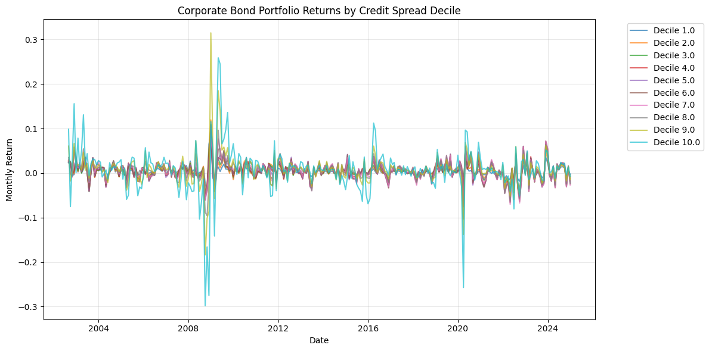
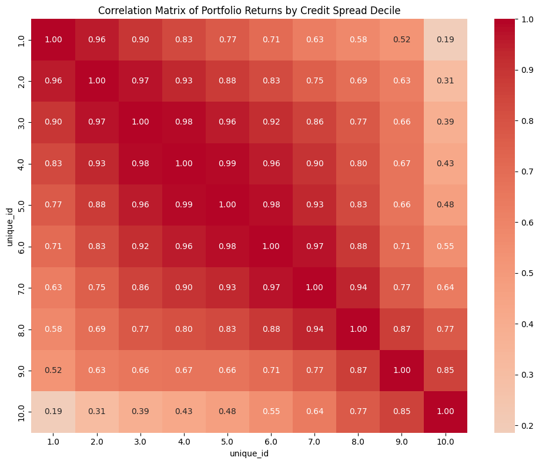
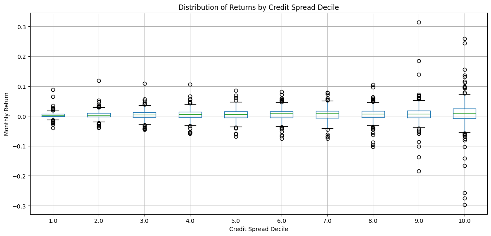

Corporate Bond Returns Summary#
import sys
sys.path.insert(0, "./src")
import pandas as pd
import matplotlib.pyplot as plt
import seaborn as sns
import chartbook
BASE_DIR = chartbook.env.get_project_root()
DATA_DIR = BASE_DIR / "_data"
Data Overview#
This pipeline produces corporate bond returns data from OpenBondAssetPricing.com, including:
Individual bond returns
Portfolio returns grouped by credit spread deciles
Data Source#
The data comes from openbondassetpricing.com, which provides TRACE (Trade Reporting and Compliance Engine) data with market microstructure noise (MMN) adjustments.
Data Cleaning (Following Nozawa 2017)#
The data cleaning procedure follows the methodology established by Nozawa (2017):
Bond Selection: Exclude bonds with floating rate coupons and non-callable option features
Price Filters: Remove observations where bond price exceeds matched Treasury price
Return Reversals: Eliminate observations with adjacent return products < -0.04
Synthetic Treasury Construction: For each corporate bond, a synthetic Treasury with identical cash flows is constructed
Portfolio Construction#
Bonds are sorted into 10 deciles based on credit spread (CS), and value-weighted returns are computed:
where weights are based on bond market value (MMN-adjusted clean price × amount outstanding).
Individual Bond Returns#
df_bonds = pd.read_parquet(DATA_DIR / "ftsfr_corp_bond_returns.parquet")
print(f"Shape: {df_bonds.shape}")
print(f"Columns: {df_bonds.columns.tolist()}")
print(f"\nDate range: {df_bonds['ds'].min()} to {df_bonds['ds'].max()}")
print(f"Number of unique bonds: {df_bonds['unique_id'].nunique()}")
Shape: (1859498, 3)
Columns: ['unique_id', 'ds', 'y']
Date range: 2002-08-31 00:00:00 to 2025-03-31 00:00:00
Number of unique bonds: 53389
df_bonds.describe()
| ds | y | |
|---|---|---|
| count | 1859498 | 1.859498e+06 |
| mean | 2015-11-16 05:37:56.120113408 | 4.687305e-03 |
| min | 2002-08-31 00:00:00 | -9.981083e-01 |
| 25% | 2010-10-31 00:00:00 | -6.126034e-03 |
| 50% | 2016-11-30 00:00:00 | 3.716778e-03 |
| 75% | 2021-06-30 00:00:00 | 1.522560e-02 |
| max | 2025-03-31 00:00:00 | 9.000757e+00 |
| std | NaN | 4.981669e-02 |
Portfolio Returns by Credit Spread Decile#
df_portfolio = pd.read_parquet(DATA_DIR / "ftsfr_corp_bond_portfolio_returns.parquet")
print(f"Shape: {df_portfolio.shape}")
print(f"Columns: {df_portfolio.columns.tolist()}")
print(f"\nDate range: {df_portfolio['ds'].min()} to {df_portfolio['ds'].max()}")
print(f"Credit spread deciles: {sorted(df_portfolio['unique_id'].unique())}")
Shape: (2690, 3)
Columns: ['unique_id', 'ds', 'y']
Date range: 2002-08-31 00:00:00 to 2024-12-31 00:00:00
Credit spread deciles: [np.float64(1.0), np.float64(2.0), np.float64(3.0), np.float64(4.0), np.float64(5.0), np.float64(6.0), np.float64(7.0), np.float64(8.0), np.float64(9.0), np.float64(10.0)]
# Summary statistics by decile
portfolio_stats = df_portfolio.groupby("unique_id")["y"].agg(
["count", "mean", "std", "min", "max"]
)
portfolio_stats.columns = ["Count", "Mean", "Std", "Min", "Max"]
portfolio_stats
| Count | Mean | Std | Min | Max | |
|---|---|---|---|---|---|
| unique_id | |||||
| 1.0 | 269 | 0.003514 | 0.010835 | -0.039874 | 0.088565 |
| 2.0 | 269 | 0.004218 | 0.014543 | -0.039339 | 0.119262 |
| 3.0 | 269 | 0.004707 | 0.016579 | -0.044883 | 0.108928 |
| 4.0 | 269 | 0.004874 | 0.019123 | -0.059339 | 0.106005 |
| 5.0 | 269 | 0.004991 | 0.020533 | -0.069163 | 0.085645 |
| 6.0 | 269 | 0.005662 | 0.021498 | -0.075524 | 0.081520 |
| 7.0 | 269 | 0.005901 | 0.021977 | -0.074917 | 0.078264 |
| 8.0 | 269 | 0.006415 | 0.023988 | -0.103130 | 0.104339 |
| 9.0 | 269 | 0.007719 | 0.036159 | -0.183776 | 0.314782 |
| 10.0 | 269 | 0.007371 | 0.052666 | -0.297770 | 0.258807 |
Time Series of Portfolio Returns#
# Pivot for plotting
df_pivot = df_portfolio.pivot(index="ds", columns="unique_id", values="y")
df_pivot = df_pivot[sorted(df_pivot.columns, key=lambda x: int(x))]
fig, ax = plt.subplots(figsize=(12, 6))
for col in df_pivot.columns:
ax.plot(df_pivot.index, df_pivot[col], label=f"Decile {col}", alpha=0.7)
ax.set_xlabel("Date")
ax.set_ylabel("Monthly Return")
ax.set_title("Corporate Bond Portfolio Returns by Credit Spread Decile")
ax.legend(bbox_to_anchor=(1.05, 1), loc='upper left')
ax.grid(True, alpha=0.3)
plt.tight_layout()
plt.show()

Correlation Matrix#
Correlation between credit spread deciles shows how returns move together across the credit risk spectrum.
corr_matrix = df_pivot.corr()
fig, ax = plt.subplots(figsize=(10, 8))
sns.heatmap(corr_matrix, annot=True, fmt=".2f", cmap="coolwarm", center=0, ax=ax)
ax.set_title("Correlation Matrix of Portfolio Returns by Credit Spread Decile")
plt.tight_layout()
plt.show()

Return Distribution by Decile#
fig, ax = plt.subplots(figsize=(12, 6))
df_portfolio.boxplot(column="y", by="unique_id", ax=ax)
ax.set_xlabel("Credit Spread Decile")
ax.set_ylabel("Monthly Return")
ax.set_title("Distribution of Returns by Credit Spread Decile")
plt.suptitle("") # Remove automatic title
plt.tight_layout()
plt.show()

Credit Spread Decile Definitions#
Decile |
Description |
|---|---|
1 |
Lowest credit spread (safest bonds) |
2-9 |
Intermediate credit spreads |
10 |
Highest credit spread (riskiest bonds) |
Bonds are sorted into deciles based on their credit spread relative to matched Treasury securities. Higher deciles represent bonds with wider credit spreads, typically indicating higher credit risk.